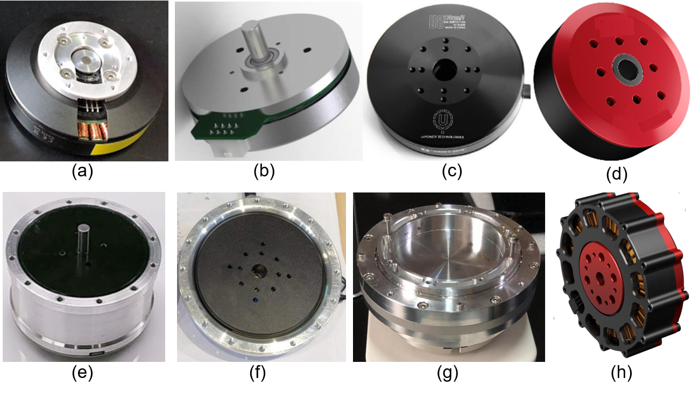
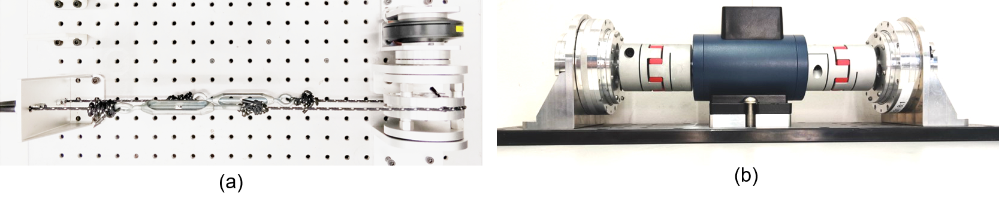

Our Facilities and Equipment
The Biomechatronics Laboratory is the lab established by PI Su. It is an approximately 1700 sq. ft. suite located on the seventh floor of the Marshak Science Building and the second floor of the Steinman Hall Building on The City College of New York’s campus in Manhattan. It includes 4 office rooms, 1 workspace, and 1 experimental space. It is a facility for biomechanics and wearable robotics research. The lab has been instrumented with a heavy-duty treadmill, mobile motion capture system, mobile insole sensors, and state of the art 3D printers. Several exoskeleton prototypes have been developed for research on rehabilitation, mobility assistance, hand manipulation, and human augmentation, etc.
Computer
6 DELL desktops; 2 HP desktops; 3 XPS DELL laptops; 1 HP laptops; 5 Lenovo laptops.
Offices
4 Offices are available in the seventh floor of the Marshak Building and the second floor of the Steinman Hall Building.

Equipment Available
(1)Robot systems
(a)Tethered exoskeleton emulator system: with wearable end-effectors for hip, knee, ankle, and spine joints. Offboard Exoskeleton Test Platform: The platform mainly includes mechanical cable drive actuator platform, electronic sensors, I/O and communication board, and Simulink Desktop Real-Time based real-time control system.
(b)Exoskeletons: Portable soft knee exoskeletons; Portable hip and knee exoskeletons; Powered robotic hand exoskeleton; Bio-inspired back exo, Shoulder exo; Myomo powered elbow exoskeleton.
(c)Humanoid robot.

(2)Lab-based Biomechanics Analysis Equipment
(a)Qualisys video Motion Capture System: 8 cameras.
(b)Force plate (Bertec, Inc.).
(c)Treadmill: One F63 sole treadmill with adjustable elevation.
(d)Stepmill: One 7000pt stepmill for stair climbing evaluation.
(e)Biomechanics Analysis Software: AnyBody Technology (musculoskeletal biomechanics modeling software), Biomechanics of Bodies (B.O.B).

(3)Portable Biomechanics Analysis Equipment
(a)One wearable sensor-based motion capture system (Noitom, Inc.).
(b)Wearable sensors: A set of customized wireless IMU system includes 8 measurement nodes. 20 Individual IMU measurement nodes.
(c)Foot Insole Sensors: One pair of Footswitches insole sensors (B&L Engineering, Inc.), two pair of pressure insole sensors (Podoon, Inc., Moticon, Inc.).
(d)Metabolic Measurement Devices: A portable lightweight human walking metabolic estimation equipment (Goxlabs, Inc.), VO2 mask (Canada).
(e)Electromyography (EMG) Measurement Units: Three customized wireless EMG measurement nodes, eight commercial EMG measurement nodes (B&L engineering, Inc.).
(f)Torque and Force Measurement Sensors: Two loadcells (0~50Nm, Futek, Inc.), four customized loadcells (0~50Nm, 0~100Nm) and one 6-axis loadcell (Sunrise, Inc.), 20 force sensors (0~5kg).

(4)Actuators
25 customized high torque density actuators with different specification, including high torque density motors, gears, motor drivers, magnetic encoders and DSP 28335 based controller. 5 Maxon EC series flat motors (Maxon motors, Inc.), 3 commercial brushless high torque density motors (DJI, Inc., Tmotor, Inc.), 1 Yaskawa direct-drive motor, 30 DC/EC motors, driver and controller with different brands.

(5)Manufacturing and prototyping
(a)Markforged 3D printer: composites including carbon fiber, Kevlar, Resin, Nylon,Onyx.
(b)Formlabs 3D Printer: stereolithography.
(c)Makerbot: ABS, PLA.
(d)Sewing Machine: Singer Heavy Duty 4452 Sewing Machine.
(e)Prototyping Workshop: Full set of hardware instruments including CNC milling machine, advanced printing machine, laser cutting machine, and advanced circuit board prototyping machine. It can fully support the pneumatic and hydraulic actuator and inflatable exoskeleton manufacturing and testing, customized wearable fiberglass and Silica gel manufacture platform.

(6)Workbench and platforms
(a)Hardware Electronic Platform: Full set of hardware electronic develop the platform, the equipment is including but not limited to, power supply, oscilloscope, signal generator, multimeter, soldering machine, heat gun, Gauss meter, and thermal imager.
(b)Tethered exoskeleton test platform.
(c)Motor test platform.

(7)Miscellaneous
(a)Microcontrollers: 3 Teensyduino v3.6; 6 Arduino Due; 30 Arduino Uno, 6 ; 6 Beagle Bone Black; 3 STM32F103.
(b)Education Kits: 12 lab-made modular Advanced Mechatronics Education Kits, 2 Festo Bionics4Education education kits.
(c)Virtual Reality System: VIVE VR system (HTC, Inc) with development software and SDK.
(d)Mannequin: Three test mannequins including complete nursing skills mannequin (Keri), Professional Dress Form Female mannequin (Fashion Display) and model mannequin.

(8)Available Resources
(a)Bertec Instrumented treadmill, At Kessler Foundation in West Orange, NJ.
(b)C-Mill Virtual Reality System by Motekforce Link at Kessler Foundation in West Orange, NJ.